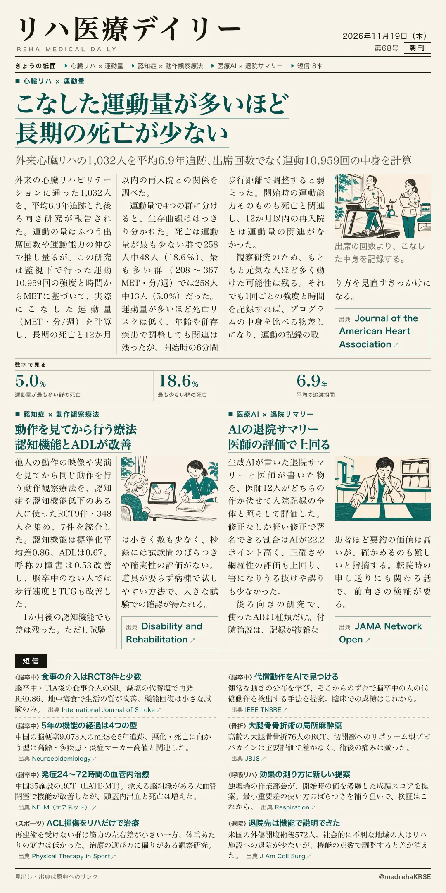
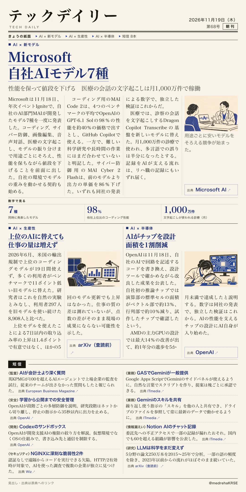

リハ医療デイリー
こなした運動量が多いほど 長期の死亡が少ない
外来心臓リハの1,032人を平均6.9年追跡、出席回数でなく運動10,959回の中身を計算

テックデイリー
Microsoft 自社AIモデル7種
性能を保って値段を下げる 医療の会話の文字起こしは月1,000万件で稼働

外来心臓リハの1,032人を平均6.9年追跡、出席回数でなく運動10,959回の中身を計算

性能を保って値段を下げる 医療の会話の文字起こしは月1,000万件で稼働
